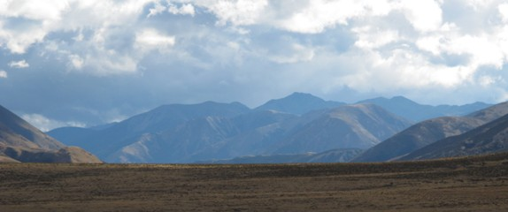
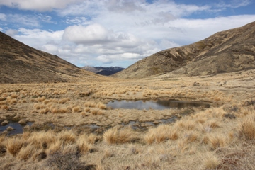
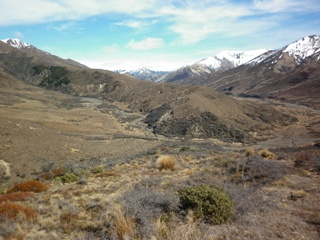

www.rogaine.org.nz |
Office Hours 2011 "St James" 7 hour Rogaine Sunday 4th December, North Canterbury |

| Download this Information (23KB PDF) | |
| Enter on-line | List of Entrants |
| Instructions for Competitors (41KB PDF) | |
| Late entries now closed | |||||||||||
| Date: | Sunday 4th December 2011 | ||||||||||
| Time: | 7 hour - 9.30am to 4.30pm, registration and course planning from 7.45am | ||||||||||
| Site: | St James Conservation Area, north of Hanmer Springs. Allow 2.5 hours from Christchurch. Camping is available for free Friday and Saturday nights at St James Homestead | ||||||||||
| Terrain: | A mix of rolling land, steep hills and valley floors, altitude ranging from 800 - 1200m. Open grassland and low scrub, with significant areas of matagouri (we recommend gaiters for lower leg protection). | ||||||||||
| Map: | The map will be derived from Topo50, the NZ standard topographic map with 20m contours. It will be pre-marked with checkpoints and out of bounds areas. Map size A3 at a scale to be notified prior to event day. | ||||||||||
| Instruction: | Available to those needing it on the day. | ||||||||||
| Cancellation: | Only if conditions are extreme on the day. Organisers reserve the right to shorten the event before the start. (No entry fee refund if the event is cancelled). | ||||||||||
| Responsibility: | Neither NZRA nor the Dept. of Conservation accept liability for any accident or injury to participants during the event. The ‘team contact’ on the entry form must ensure all team members are aware that they participate at their own risk. | ||||||||||
| Didymo Alert: Please do not bring dirty or wet footwear, bikes and
tyres etc. into this area from elsewhere. CHECK - CLEAN - DRY | |||||||||||
| Land Access: | We acknowledge the support of Department of Conservation and adjoining Molesworth Station for this event. | ||||||||||
| |||||||||||
| Entry: | Participants are limited to 200 to ensure we go lightly on the extensive natural wetlands in the area. There will be 4 categories of competition – Men, Women, Mixed and Junior (under 20 on event day). On-line entry will open first week of November. The closing date for entries is 5pm Wednesday, 23rd November 2011. Late entries at the organiser’s discretion and for an additional fee of $15 per person. | ||||||||||
| Payment: | Either direct credit to NZRA Bank Account No. 03 0674 0197735 00 or by cheque payable to New Zealand Rogaining Association. Send cheques to:
| ||||||||||
| |||||||||||
| |||||||||||


| WHAT IS ROGAINING? | |
| A rogaine is a cross-country navigation event on foot, using a map and compass. This event will take you over a mix of challenging farmed and forested hill country with some scattered scrub and native bush.
Each team (comprising 2 to 5 people) is given a standard topographical map with about 60 checkpoints marked on it. A clue is provided for each checkpoint, e.g. “A saddle, N side”. Teams collect points by visiting as many checkpoints as possible over the duration of the rogaine. Late finishers lose points. The team with most points wins. As a team you choose your own route and distance within the mapped area. You decide which checkpoints to visit and in which order. You can be as competitive or as social as you choose. A team can go out ‘on course’ for the full time, or just a few hours. Water may be provided at one or more locations on the course. If they wish, teams can take a break at the hash house where hot food and drink is available from late afternoon. There’s an evening meal after the event, too. Plan your course well. Rogaining is as much about careful route choice and navigation as it is about physical endurance. For fit, first-time people, plan on about 2 to 2.5 kms per hour average over the whole event time. If you find you travel faster or slower adjust your course as you go. | |